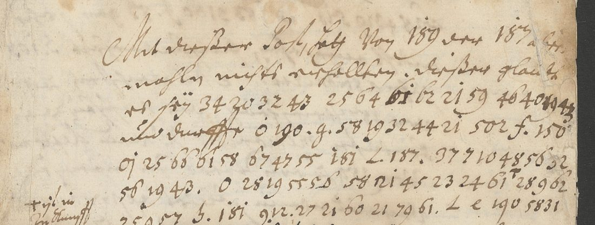
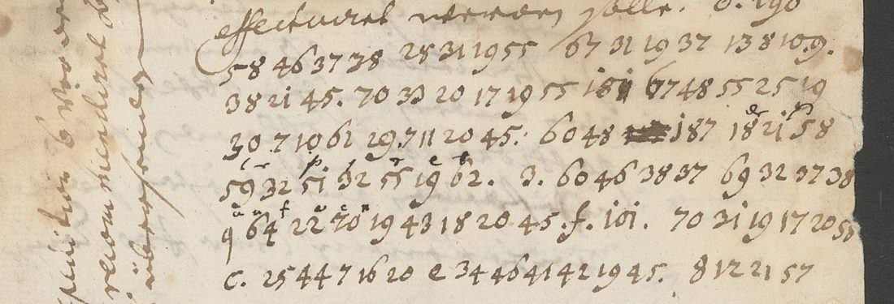
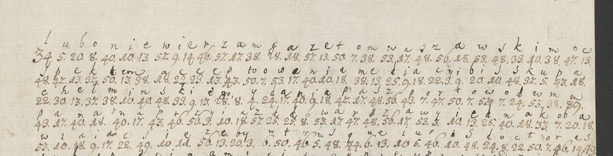
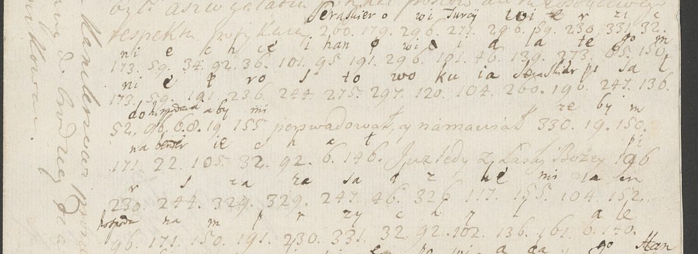

At a glanceKey recovered from the ciphertext alone · partial · 865 of 1,361 cipher tokens (63.6%); the letter cipher 638 of 682 (93.5%)
- The letters
- Fifteen letters, 7 March to 14 July 1706, from an agent in Vienna who signs with a cover name read “Sidon”, to the Baron de Schenck, chamberlain of King Augustus II, at Cracow and Lublin. With them on DECODE: eighteen ciphered letters to Hetman Adam Mikołaj Sieniawski, 1707–1714.
- Where
- Archiwum Narodowe w Krakowie: AKM 21 plik 30/1 (the Schenck letters, DECODE R7486–R7500); Zbiór Dzieduszyckich 26/32 nr 13 and nr 5, and 24/11 no. 116 (the Sieniawski letters, R7468–R7485). All catalogued on DECODE with no decipherment.
- The cipher
- Clear German with single words and phrases in a homophonic letter table (a = 7, 8, 9; b = 10, 11, 12; … three numbers to a letter in alphabetical order), three-digit code numbers for people and things, and dotted letter signs.
- How it was deciphered
- A free solver gave nothing; a search that kept the table in alphabetical blocks and moved only the block boundaries found it from the ciphertext alone. The recipient’s own glosses agree with it and give three words of the code: der, von, der Kayser. Words of the code’s alphabetical 500s and a few persons were then fixed from context.
- What it says
- Court news from Vienna in the year of Ramillies and Turin, the Saxon king's affairs at the imperial court, rivalries for a post, the Malcontents in Hungary: “dieser glaubet sey kein guttes omen”.
- Still open
- 65 of the 77 three-digit codes, nearly all persons (187, 181, 166, 190 …): their roles are clear, their names are not, and no key survives. Also eight short runs and about ninety small word signs. Of the Sieniawski letters, twelve are in print (Kaczka 2012); the six he left out carry contemporary decipherments, transcribed here, five of them above 95%.
01 The records
DECODE groups thirty-three records of the Archiwum Narodowe w Krakowie, all uploaded in September 2023 with status N/A, cipher type “unknown” and no key or decryption file. They come from four collections:
| Records | Collection | What they are |
|---|---|---|
| R7486–R7500 | AKM 21 plik 30/1 | Fifteen German letters, Vienna, 7 March – 14 July 1706, to the Baron de Schenck. DECODE: “NN z Drezna (jezuita?)” to “Schenck (Szench) szambelan Augusta II”. |
| R7468–R7480 | Zbiór Dzieduszyckich 26/32 nr 13 | “Listy multańskie i inne do Adama Mikołaja Sieniawskiego pisane szyfrem”: Brâncoveanu and Cantacuzino, 1709–1714, and two other letters (pp. 29–34). |
| R7481–R7483 | Zbiór Dzieduszyckich 26/32 nr 5 | Letters “from Wallachia” with news from Bender, 1709, and a Brâncoveanu postscript. |
| R7484–R7485 | Zbiór Dzieduszyckich 24/11 no. 116 | DECODE “Krakow_UNK_3/4”: Stanisław Chomentowski, envoy at the Porte, to Sieniawski, Adrianople, 9 May 1713, and an undated second letter. The archive wrapper gives the shelfmark. |
The neighbouring records R7460–R7467 and R7501–R7507 belong to other collections and correspondents and give no key for these.
02 The Vienna letters to Schenck
The address leaf of the letter of 27 March reads A Monsieur / Mons.r Le Baron de Schenck / Chambell. de Sa Majesté / Le Roy de Pologne / à Cracovie. Every letter is dated from Vienna (“W. d. 12. Maj 1706”), not Dresden; the writer numbers them (N. 15 on 27 March, N. 47 on 14 July, so more than one a week), closes “Votre tres humble et tres obeiss. Serviteur” and signs with a name read “Sidon” or “Sadon”, probably a cover name. The receipt dockets say “Recept. d. 18 May 1706 in Cracau”, “d. 7. Junÿ 1706 in Lublin”; a later archive hand wrote “Seligman” and “Lehman” on two address leaves.
| DECODE | No. | Date | DECODE | No. | Date |
|---|---|---|---|---|---|
| R7486 | 18 | 7 March 1706 | R7494 | 35 | 5 June |
| R7487 | – | 13 March | R7495 | 38 | 15 June |
| R7488 | 15 | 27 March | R7496 | 39 | 16 June |
| R7489 | 27 | 8 May | R7497 | 40 | 19 June |
| R7490 | 28 | 12 May | R7498 | 41 | 23 June |
| R7491 | 31 | 22 May | R7499 | 44 | 3 July |
| R7492 | – | 26 May | R7500 | 47 | 14 July |
| R7493 | 32 | 29 May |
Most of each letter is in clear German, mixed with French and Latin: the siege of Landau and the fall of Hagenau, Barcelona relieved, Ramillies and the coming peace congress (who might mediate, Denmark or Sweden), the relief of Turin, the Malcontents in Hungary. The cipher covers names and the delicate words.

03 The letter table
Three numbers to each letter, in alphabetical order, with no j and no v:
| a | b | c | d | e | f | g | h | i | k | l | m |
|---|---|---|---|---|---|---|---|---|---|---|---|
| 7 8 9 | 10 11 12 | 13 14 15 | 16 17 18 | 19 20 21 | 22 23 24 | 25 26 27 | 28 29 30 | 31 32 33 | 34 35 36 | 37 38 39 | 40 41 42 |
| n | o | p | q | r | s | t | u | w, v | y | z | |
| 43 44 45 | 46 47 48 | 49 50 51 | 52 53 54 | 55 56 57 | 58 59 60 | 61 62 63 | 64 65 66 | 67 68 69 70 | 76 77 78 | 79 |
The end of the table is irregular: 70 is w (wieder, wegen), 76–78 are y (Ogilvy, Convoy, Secretarÿ), 79 is z (zugleich, correspondenz, Reichsvicecantzler); 67–69 serve for both v and w (von, Vanitäten, Avisen). The single digits 7, 8 and 9 inside runs are therefore a. No key sheet survives with the letters.
The recipient worked some runs out himself. Over “58 31 15 28 25 19 58 14 28 37 8 26 19 43” (sich geschlagen) in N. 18 he wrote small letters s, a, k, l, a, and over “… 51 32 55 19 62” (dessipiret) p, r, e, t: they agree with the table.
04 The decipherment
106 runs of the letter table, 682 numbers. Read in their sentences (word division and spelling are the writer's):
- “dieser glaubet sey kein guttes omen”; “o. Herr Senfft hat gar 3. 181 abgesezt, L e 190 sich geschlagen”; “es soll hier viel Cabalen … wieder 181 vorgehabt haben” (N. 18, 7 March).
- “o. Reichsvicecantzler” (N. 18); “wegen der Invasion” (13 March); “eine Convoy”, “Plessen”, “correspondenz” (N. 15).
- “de Baron Kleinburg alhier”, “Ogilvy”, “aus Muscau geschrieben”, “confidence”, “malevoli” (N. 28, 12 May).
- “wie auch beygleich b. 150 ein rescript, so b. 154 L. 166 zugleich unterschrieben, erhalten”; “combination”, “du cabinet”, “in puncto diversatis religionis” (N. 38, 15 June).
- “Secretarÿ”, “wegen o introduction”, “dimission”, “wegen Nellenburg” (N. 41, 23 June).
- “oo. Malcontenten auffs neue allarmiren dürfften”, “die schon accordirten puncten wieder resiliren”, “diffidence” (N. 47, 14 July).

638 of the 682 numbers (93.5%) read as sense. Seven runs that a single slip spoils still read (introduc[t]ion, punc[t]en, d[i]mission, be[m]ühen); eight do not: “gutswor”, “sollwiglaufeenden” (perhaps zuwiderlauffenden, with the recipient's a u f over it), “lceth”, “ditlan”, “datmseyihm” and three of one or two letters (“iwzo” is ijzo, the writer’s spelling of itzo). Their digits were checked twice on the images.
05 The codes
Three layers sit beside the letter table: three-digit numbers for persons, courts and words (77 distinct, 502 occurrences), a few two- and one-digit numbers (83, “5”, “3.”, “2.”), and dotted letters before codes and runs (o., b., L., d., e., f., g., c., m., p., oo, ooo; 134 occurrences). The recipient settled the last two layers himself in N. 32: he wrote der over “o.” and von Kayser over “5 83”. The dotted letters are therefore a code for small words, not nulls.
| Code | n | Value | Grade | Evidence |
|---|---|---|---|---|
| o. | 34 | der | C | the recipient’s gloss; “Es hat 189 o. 187 heute … schreiben wollen”, where the writer first wrote der and struck it |
| 5, 83 | 3, 9 | von, der Kayser | C | the recipient’s gloss; “83 ist wegen 204 also zu timide”, “f. 83 gar sehr wohl angesehen” |
| L., f., b. | 11, 13, 18 | und, bey, von dem | M, M, I | “b. 154 L. 166 zugleich unterschrieben”; “ob 189 f. 254 reussire”; “b. 187 bin ersuchet worden” |
| 189 | 56 | Baron Schenck, the addressee | M | “einem diplomate vor 189”, “das diploma des 189”, the genealogy of “der Schenckisch-Nideggischen familie”; “des 189 zugestossenen Unpäßlichkeit” |
| 150 | 42 | King Augustus II | M | “in favorem 150”; “dass 150 nichts von Schweden zu erwarten habe”; “Ministres 3. 150” |
| 100 | 9 | the imperial court | M | “das interieur von 100”; “bei 100 mächtige grosse desordre” |
| 204 | 5 | Sweden | M | “83 ist wegen 204 also zu timide”; “Resolutionen, so etwann 204 eine jalousie verursachen könnten” |
| 509, 513, 515, 519, 524 | 17 | Friede, Ordre, Progressen, Reise, Urlaub | M | “in pto des 509, worauf nunmehro gedacht werden will”; “die 513 du cabinet”; “weiter glückliche 515”; “seine 519 auf morgen oder übermorgen festgestellet”; “beÿ 100 524 nehmen” |
| 502, 518, 521 | 9 | Abreise, Recommendation, Resolution | I | bounded by the alphabetical order of the 500s, which rise from F (509) through O, P, R to U (524), and fitting their sentences |
The persons are the gap. Their roles are clear from a second reading of every sentence that holds a code: 187 (104 times) is the writer’s principal in Vienna, in the King’s service and paid by bill of exchange; 181 (67) is the King’s man at the imperial court, with a secretary, couriers to 150 and rheumatism in his arm; 166 a minister at the King’s side; 190 an imperial minister who “nec superiorem, nec parem aut inferiorem vertragen kann” and wants “ein monopolium der affairen” (not Charles XII, who is named in clear in the same letter); 132 and 193 rivals for one post. The 100s and 200s do not follow the alphabet (204 Sweden breaks it), so position bounds nothing, and none of the names written in clear (Wackerbarth, Senfft, Plessen, Heinisch) can be tied to a code.
06 The Sieniawski letters
Mariusz Kaczka printed the Polish letters of Constantin Brâncoveanu and Constantin Cantacuzino to Sieniawski from these originals in 2012, with the Wallachian chancellery's key (a = 19, b = 60, c = 66, …; 900 = August). They are R7468–R7474, R7477–R7480 and R7483 (his nos. IV, V, VIII, XIII, XVII, XIX, XX, XXI, XXIII, XXV, XXVI). Ten lines of R7473, decoded with that key, agree with the decipherment written between the lines and with his text. Kaczka left out six pieces, which carry contemporary decipherments between the lines:
- R7475 (nr 13 pp. 29–30): an unsigned adviser in Sieniawski's camp, probably 1707, distrusting the mediation of the Bishop of Chełmno and Stanisław's offers, “lubo nie wierzam gazetom warszawskim”. A homophonic letter table, again in alphabetical blocks (a = 17–18, b = 20–21, c = 22–23 … z = 56–57), rebuilt here from the gloss; 600 = król szwedzki.
- R7481, R7482 (nr 5 pp. 1–3, 5–6): news from Bender in 1709, in Polish and in Latin, in the key Kaczka gives for Constantin Turculeț: “Ząd to occurrit, siedmset Szwedów bez orężnych z pułkownikiem Gilenkrukiem przeszło do Soczawy”. 99.4% of the numbers carry a gloss; page 3 is a fair copy of the decipherment. Checked token by token: 99.6% and 100% read as sense.
- R7484, R7485 (24/11 no. 116) and R7476 (nr 13 pp. 31–34): Stanisław Chomentowski at the Porte: Adrianople 9 May 1713, an undated letter of 1713, and (R7476) Constantinople, May–August 1714, when Brâncoveanu (code XVIII, glossed “Hospodar Multański”) was held in Yedikule. A three-digit syllabary glossed syllable by syllable, its codes in alphabetical bands. R7485 also has its cipher written out in clear at the head of the page. Checked token by token: R7484 96.5%, R7485 100%; R7476, whose glosses are faint, 94.9% after seven passes (glosses re-read at high contrast, the unread stretches re-transcribed digit by digit, since this hand closes its 7 like a 4, and candidate words scored against the code), two tokens short of the bar.


07 Method
- Pulled the metadata of R7460–R7507 through the DECODE API and the 130 images with a logged-in session; no record carries a key or decipherment.
- Two transcription passes over the 52 images of the Schenck letters: clear text as far as legible, every cipher number, superscript and docket.
- A free homophonic solver (any number to any letter, German n-grams of the 1720s–60s) gave no sense on the 642 numbers then in hand.
- The runs end in 19 43, 21 45, 20 44, 19 55, and the frequent numbers cluster. If the homophones are consecutive numbers in alphabetical order, the key is only 23 boundaries. Annealing those boundaries alone against the same model gave blocks of three from a = 7–9 in the best restart (−913 against −1,212 to −1,496 for the others) and, at once, de Baron Kleinburg alhier and correspondenz.
- Every run was transcribed again at full resolution against the key: 24 lines corrected, most of them the writer's 31 taken for 21 and his delta-shaped 6 for 0 or 8.
- A second pass re-read every sentence that holds a code or a dotted sign (about 90 crops) and the recipient's glosses; the code was then tested for alphabetical order, which holds for the 500s and not for the persons.
- Outside help was sought for the names: printed editions, the lists of Saxon envoys at Vienna (Wackerbarth to 1706, Vesnich 1706–08), and the Wiener Diarium of 1706 for dated cribs, which the Austrian National Library serves only behind a bot check. None gave a key or a name.
- The Sieniawski pieces Kaczka did not print were transcribed with their interlinear decipherments and checked token by token against the keys; R7476's faint glosses were re-read at high contrast and its remaining syllables tried against the alphabetical bands of the syllabary.
08 What remains uncertain
- 65 of the 77 three-digit codes, 394 occurrences, nearly all persons: 187, 181, 166, 190, 254, 258, 132, 193, 186 and the singletons. No key is filed with the letters, on DECODE or in print, and the clear text gives roles, not names; the Saxon cipher keys of the period would be in the Hauptstaatsarchiv Dresden.
- About ninety small word signs (d., e., g., c., m., p., oo, ooo, “3.”, “2.”): articles or pronouns, but no single value fits every occurrence.
- Eight runs (44 numbers) with no sense, listed above; their digits were checked twice, and each occurs once.
- Grades: o., 5 and 83 C (the recipient's gloss); 189, 150, 100, 204, L., f. and five words of the 500s M; b., 502, 518, 521 I. The clear text is transcribed only in part ([?] where water damage or the hand defeat it).
- Who “Sidon” was, and which Schenck: neither is identified. DECODE's “NN z Drezna (jezuita?)” does not fit letters dated from Vienna.
- R7476: 83 of 1,621 tokens (5.1%) give no word: 67 whose syllables are known but form no word found, 8 in names not identified (code 216, glossed “Pułta”), five one-off codes with no gloss, three illegible. R7484: 18 of 513, in three short passages and one code whose gloss is a flourish.
09 Sources
- DECODE records R7486–R7500 (Schenck letters) and R7468–R7485 (Sieniawski letters), Archiwum Narodowe w Krakowie.
- M. W. Kaczka, “Unpublished Letters of Constantin Brâncoveanu and Constantin Stolnicul Cantacuzino, from the Polish Archives”, Danubius XXX (Galați, 2012), pp. 101–140, PDF: keys in notes 21 and 22.
- A. Mareș, “Din istoria criptografiei românești: cifrul cancelariei brîncovenești pentru corespondența în limba polonă”, Anuarul Institutului de Istorie și Arheologie “A. D. Xenopol” XXIV/1 (1987), pp. 335–341 (cited by Kaczka, not seen).
Transcriptions, the runs file, solvers and notes: targets/sieniawski1708/ in the repository.